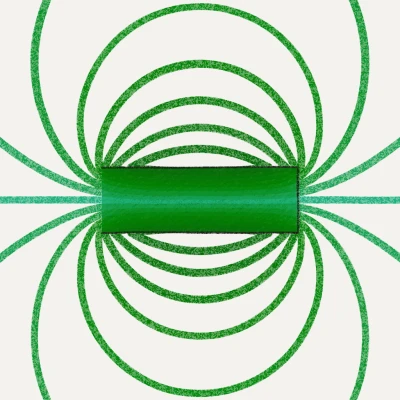

For iPhone and iPad
Sketch Fields
Draw a part, see the field.
An educational app for learning electric and magnetic fields. Draw electrodes, conductors, coils, magnets, and iron, set voltages and currents, and see the voltage, the current, the flux lines, and the capacitance, resistance, and inductance as you draw.
Black Friday to Cyber Monday: Sketch Fields Pro is half price. The code BLACKFRIDAY takes half off your first year, and BLACKFRIDAYMONTHLY half off your first 3 months. Until November 30; not for current subscribers.
Requires iOS or iPadOS 16.4 or later. In English.
Draw it
Draw lines, rectangles, circles, curves, freehand strokes, and dimensions in mm, with snapping, undo, and redo. Type a dimension to resize a side.
Give each part a role: the materials of the part, the electrodes, terminals, coils, and magnets that set up the field, and the edges that hold it. Each part of a material has its own material, and each magnet its own direction.
Put a probe at a single point with the Line tool: tap the point twice.
Model the section of a long part, per meter of depth or for a depth you type, or a thin sheet that carries current. The open space around your parts is added for you, so there is nothing to draw at the edges.
The part
- Dielectric
- Conductor
- Iron
- Magnet
- Hole
What sets up the field
- Electrode
- Terminal
- Coil
Edges
- Zero potential
- Symmetry
Analyze it
The solver works while you draw and edit. A quick result shows at once, and a finer one replaces it when you stop.
- Voltage V
- Electric field kV/mm
- Current density A/mm²
- Flux density B T
- See equipotentials and flux lines drawn over the colors, with their values; where flux lines crowd, the field is strong.
- Read the capacitance, the charge on each electrode, the resistance, the current through each terminal, the power loss, and the self and mutual inductance.
- Find the largest field, and where it sits.
- Read probes at a point, along a line with a chart, or over an area.
- Work in SI units with prefixes, such as pF, mA, and mT; lengths can also be shown in inches.
Three field types
- Electrostatics The voltage, the electric field, the charge on each electrode, the capacitance, and the largest field.
- Current flow How current spreads through a conductor, its resistance, and the power loss.
- Magnetic fields Flux lines from coils and magnets through iron and air, inductance, and the coupling between coils.
Learn with the examples
Each example has notes on what to look for, the theory value where there is one, and what to try next. Every example runs without a subscription, in every field type.
Pick from plastics and the circuit board laminate FR-4, copper, aluminum, gold, tap water, seawater, clay and wet sand, and NdFeB magnet grades, each value with its source and the condition it applies to, or make a material of your own, such as an iron of a set permeability.
The examples menu
- Getting started Coaxial cable
- Checks against theory Parallel-plate capacitor; Coaxial cable; Cable with an off-center core; Cable with two insulation layers; Two-wire line; Air void in insulation; Current crowding at a corner; Strip with a round hole; Coaxial cell in water; Two rods in water; Field around a wire; Inductance of a two-wire line; Inductance of a coaxial cable; Bar magnet; Two coupled coils
- Capacitors and insulation High-voltage electrode edge; Comb drive (MEMS)
- Lines and circuit boards Wire over a ground plane; Microstrip trace; Capacitive touch button
- Conductors Busbar with bolt holes
- Magnets and coils Magnet and a sensor; Electromagnet with an air gap
Compare with theory
Fifteen examples follow cases with a known answer from physics and electrical engineering textbooks. Each one shows the theory value beside the app’s own value, and whether they agree within the stated tolerance.
Change the part and see how far the answer moves: widen the plates, move the wires apart, or make the hole in a strip larger.
Theory in the notes
- Coaxial cable The capacitance per meter of depth, 2πε/ln(b/a), for a given outer radius the peak field is least when b/a is e.
- Two-wire line The capacitance per meter of depth, πε/arccosh(D/2R), exact for round wires.
- Air void in insulation A thin flat void across the field carries εr times the field in the insulation, and a round void 2εr/(1 + εr) times.
- Current crowding at a corner The corner square of an L-shaped bend counts as 1 − (2/π)·ln 2, or 0.5587 squares.
- Two rods in water The resistance between two rods, arccosh(D/2a)/(πσ) per meter: the two-wire line’s capacitance with ε replaced by σ.
- Field around a wire The flux density μ0I/(2πr) at a distance r, from Ampère’s law.
- Inductance of a two-wire line (μ0/π)·(ln(D/a) + ¼) per meter, the ¼ for the flux inside each wire.
- Bar magnet The flux density on the axis of a long bar magnet, from the currents its magnetization stands for.
Free and Sketch Fields Pro
Free
- Run and explore every example, in every field type.
- Draw your own dielectrics in PTFE, FR-4 or air between and around the plates of a capacitor, in electrostatics.
- The capacitance, the charge, the energy, and the largest field.
- Coarse and Medium meshes.
- Projects, files, units, and the help.
Sketch Fields Pro adds
- Current flow: conductors and terminals, current, resistance and power loss.
- Magnetic fields: coils, magnets and iron, flux lines and inductance.
- More electrodes, zero-potential and symmetry edges, and probes.
- Axisymmetric models for round parts.
- Every material, and your own materials.
- Fine meshes for more detail.
- Edit the examples.
- Reports with the model settings and probe readings.
Sketch Fields Pro is an auto-renewable subscription, monthly or yearly, with a free trial for eligible new subscribers. If your subscription ends, your sketches still open and run. See the prices, the subscription terms and the questions about Sketch Fields Pro.
On your device
Drawing and calculation run on your iPhone or iPad. Your sketches stay on your device.
-
Works offline
Drawing and the calculation need no connection.
-
No account
Open the app and start. There is nothing to sign up for.
-
No ads
The app shows no advertising.
-
Apple Pencil
Apple Pencil draws while your fingers pan and zoom. A keyboard, trackpad, or mouse works on iPad.
Educational use only
Sketch Fields is for education and learning only. Its results are estimates from a simplified two-dimensional model. The calculation is verified against published exact solutions and benchmark cases, such as a parallel-plate capacitor, a coaxial cable, and a two-wire line, but it has not been validated against measurements or tested in real-world scenarios. It is not a substitute for professional engineering analysis, testing, or applicable codes and standards. Do not use it to design, rate, or approve any real part or equipment, or for safety-critical, medical, or compliance decisions, such as those on electrical safety, high voltage, or medical implants and devices. You use the results at your own risk; to the extent the law allows, Journey On is not responsible for any loss or decision based on them. See the Terms of Use.

Sketch Fields for iPhone and iPad
Learn how voltages, currents, and magnets set up electric and magnetic fields by sketching. Requires iOS or iPadOS 16.4 or later.
Questions? Email support@journeyon.co or read the support page.